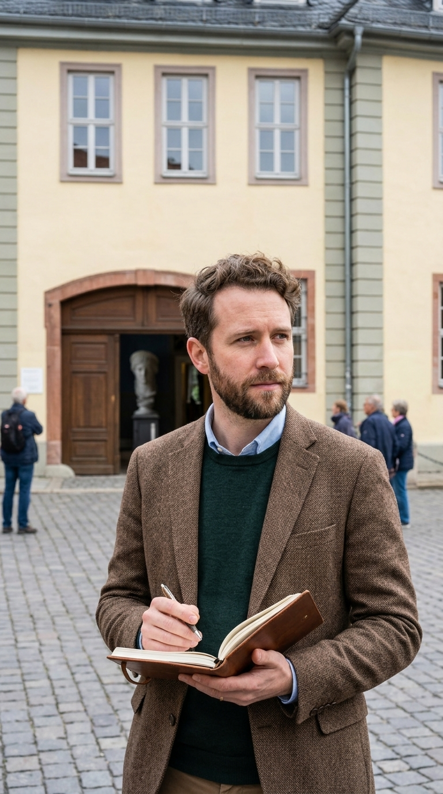
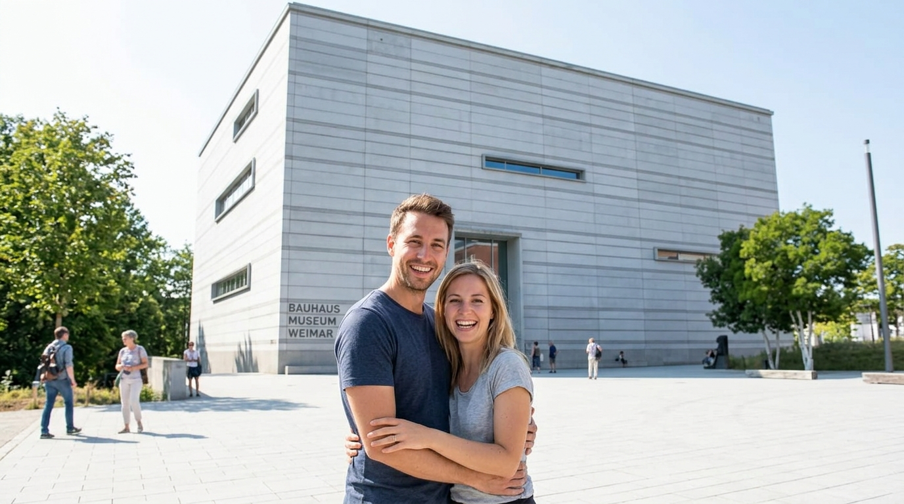
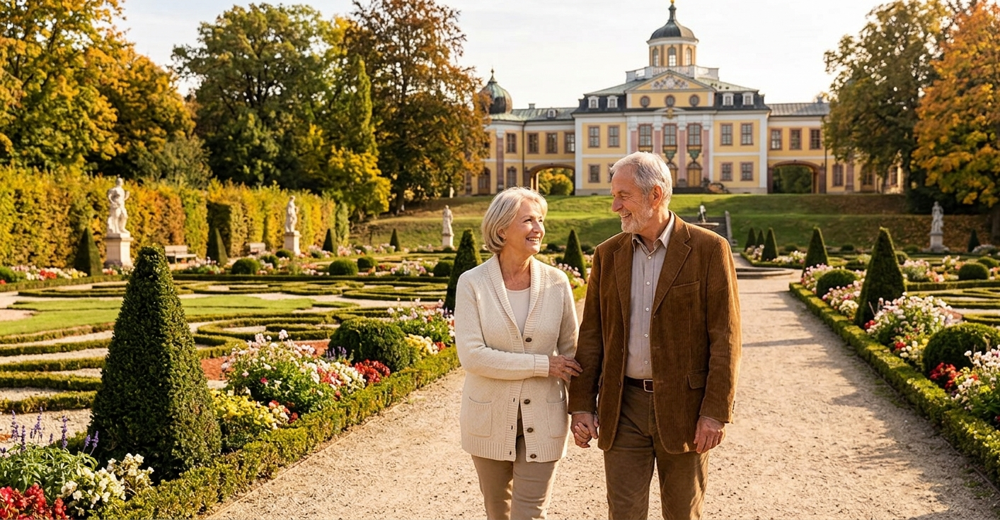
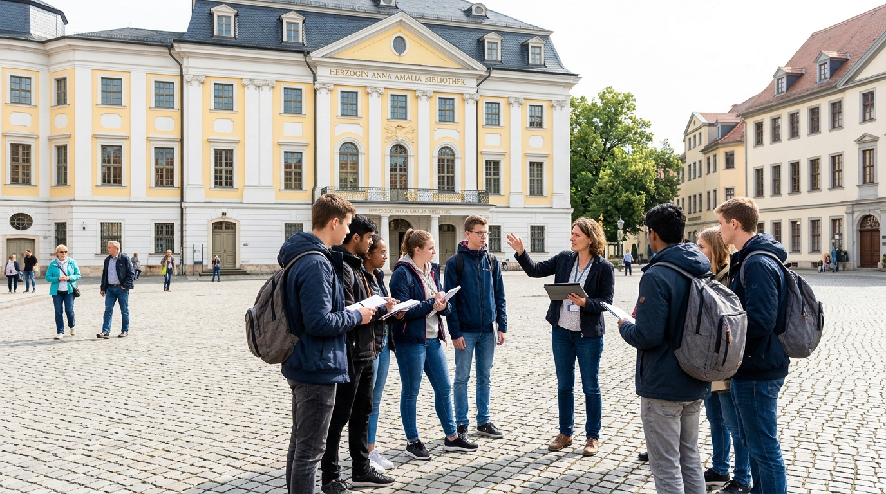
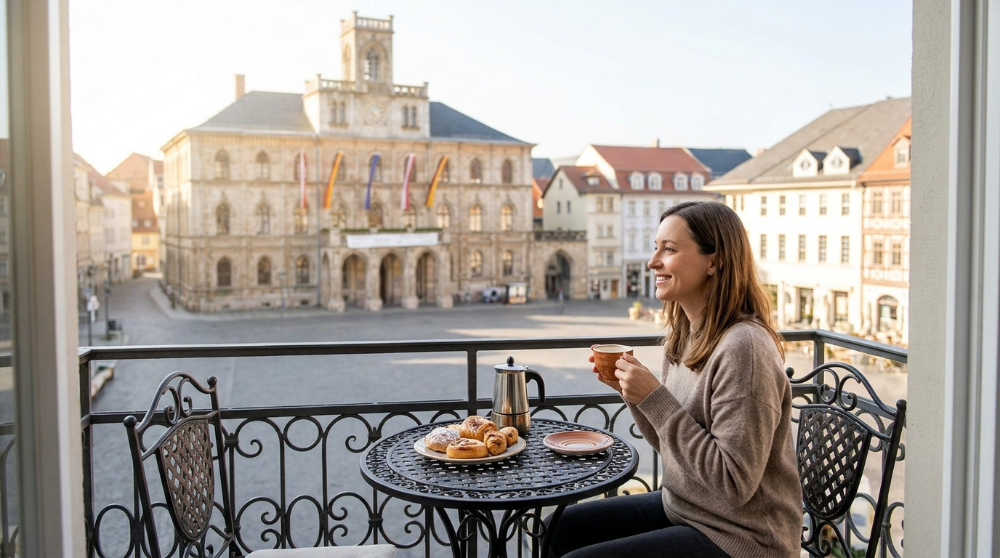

Client Testimonials | What Travelers Say About Their Weimar Experience
Real Stories from Real Travelers
At Weimar Travels, nothing brings us more joy than turning travel dreams into unforgettable memories. From scholars exploring literary history to design enthusiasts tracing the origins of Bauhaus, discover how our personalized travel services have transformed visits to Weimar for travelers from all around the world.
Core Benefits Our Clients Experience
When you plan your journey with us, you enjoy distinct advantages designed to elevate your stay:
- Zero-Stress Planning: Complete end-to-end management of itineraries, accommodation, and transportation.
- Skip-the-Line Priority Access: Pre-reserved timed tickets for high-demand landmarks like the Duchess Anna Amalia Library.
- Insider Local Knowledge: Private access to hidden courtyards, local artisan shops, and authentic dining spots.
- Tailored Pace & Style: Custom itineraries structured around your personal preferences, energy level, and interests.
- 24/7 On-Site Support: Dedicated local assistance throughout your entire stay in Weimar.
What Our Guests Have to Say
1. Dr. Aris Thorne
- Role / Job Title: Literature Professor, Oxford University
- Image:
- Testimonial:
"As a literary scholar, visiting Weimar was a bucket-list journey for me. The agency crafted an extraordinary, academically rich itinerary that granted us behind-the-scenes insights into Goethe and Schiller's original manuscripts. Every private tour was led by an expert who knew the history inside and out. Simply exceptional!"

2. Sarah & David Chen
- Role / Job Title: Architectural Designers & Modernism Enthusiasts
- Image:
- Testimonial:
"Our custom Bauhaus itinerary was utterly flawless. Our guide gave us an in-depth tour of the Haus am Horn and the Van de Velde Building that blew us away. The agency handled every transport detail and museum reservation seamlessly. We didn't have to worry about a single thing!"

3. Marcus Vance
- Role / Job Title: Solo Travel Writer & Cultural Photographer
- Image:
- Testimonial:
"I wanted to explore Weimar at my own pace without feeling rushed by a tourist crowd. Their custom self-guided audio trail and curated list of quiet, historic cafes were spot on. I felt like a local within hours of arriving."
4. Elena & Thomas Müller
- Role / Job Title: Retirees & Classical Culture Travelers
- Image:
- Testimonial:
"The team arranged private vehicle transfers, lovely boutique hotel accommodations, and concert tickets at the National Theatre. No lines, no confusion, just stunning music, classical parks, and rich German history. It was the most relaxing vacation we have had in years."

5. Prof. Julian Hayes
- Role / Job Title: University Group Coordinator, Art History Department
- Image:
- Testimonial:
"Organizing a cultural trip for 20 university students can be logistically overwhelming, but this agency made it look effortless. From arranging group coach transport to coordinating private curator lectures, everything ran with German precision. We will be booking with them every year!"

6. Claire Dupont
- Role / Job Title: Corporate Executive & Luxury Weekend Traveler
- Image:
- Testimonial:
"I needed a last-minute weekend escape from a hectic work schedule. The concierge team put together a luxury weekend package within 24 hours—complete with a private evening walk through the Park on the Ilm and fine dining reservations. A magical experience from start to finish."

Ready to Write Your Own Weimar Story?
Explore how we can customize your next getaway or get in touch with our local travel experts today.
- Plan Your Custom Itinerary– Start designing your personalized trip.
- Explore Our Services– View our private tours, concierge, and vacation packages.
- Meet Our Local Team– Get to know the local experts behind your journey.
- View Our Project Portfolio– See our innovative digital audio guides and travel tools.
- Contact Us Today– Send us a message to receive a free travel consultation.